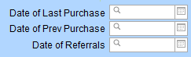

Find Customers
Often you will want to perform a search for a certain group or specific type of customers.
-
See also: How to Find Your Top Customers
How to Find Customers
-
Go to your Contacts and click the Find button.
-
Enter an asterisk * in the Email field.
Tip: An asterisk instructs FrameReady to find only fields that have been filled out and ignore empty ones. In this instance, it finds only those people who have supplied an email address.
-
Decide which other criteria you wish to search for.
Search Options and Ideas
New in FrameReady 11 -- the single First, Mid and Lastname fields will search in both First, Mid and Lastname fields.
-
In the Total Balance field enter # to see who is owing/carrying a balance.
-
Use the Customer Preferences checkboxes to limit search results.
-
You can simply enter the year, e.g. 2019 if you want all to include the entire year in your search results.
-
You can use 2010...2012 to specify a year range. Or >2010 for greater than 2010.
Find all Customers that haven't purchased since a Specific Date
-
Go to the Contacts file.
-
Click on the Find button.
The "Enter search criteria" screen appears. -
Look for the Date of Last Purchase field and enter the desired time frame.

For example, enter the date range as ... 01/01/22 to find everyone enter prior to Jan 1, 2022.
Or enter an defined date range 1/1/21...01/01/22 to find contacts who made a purchase during the year 2021.
Tip: If you are going to be sending email messages to these customers, make sure you enter an asterisk (*) into the Email Address field of the Enter Search Criteria screen in order to find only those people who actually have an email address.
Create an Email List of all Customers who spent more than $100 in 2019
-
Enter an asterisk * in the Email field.
-
Enter >100 in the Total field (that's the "less than" sign - Shift + period).
-
Enter 2019 into the Date of Last field.
-
See also: How to Find Your Top Paying Customers
Print Labels for all Customers who made a Purchase since October 1, 2019
-
Enter an asterisk * in the Address , City, State and Zip field.
-
Enter 10/1/2019.. in the Date of Last field (that's two dots).
Find all new Customers from Last Month
-
In the Creation Date field, use the format MM/* , e.g. 11/* , and click Perform Find.
FrameReady uses the asterisk in the day to find all values; and automatically uses the current year.
Note on Searching by Phone Number
Tip: Due to the way FrameReady auto-formats 10 digit telephone numbers, it is best practice to use this same format when performing a find:
-
Go to Contacts > Find > Phone field
-
Use the format: (555) 123-4567
How to Search by Partial Phone Number
-
To use wildcards, such as 555* first, on the Main Menu, in the file menubar, click Perform and choose Restore Full Menus.

-
Go into your Contacts > Find > Phone field
-
Enter a partial phone number, such as 555*
© 2023 Adatasol, Inc.